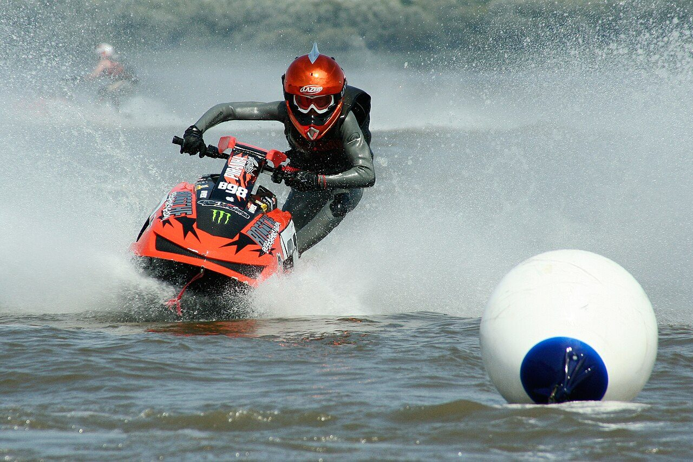

Photo : Backlit, CC BY-SA 3.0 — Wikimedia Commons. Photo illustrative d'un objet ou véhicule réel du même type, pas une capture du jeu.
Bateau
Seashark
EN BREF
- Constructeur : Speedophile
- Catégorie : Scooter des mers
- Vu dans : bande-annonce 1 (0:22)
- Fiabilité : 🟢 présent dans le matériel officiel de Rockstar
Speedophile Seashark est un scooter des mers de la marque Speedophile, de retour de GTA V.
Dans GTA 6
Dans la bande-annonce 1 (0:22), un Seashark rouge est posé au bord de l'eau sur la plage bondée de Vice Beach, à côté d'un jet-ski jaune. Son dessin a été sensiblement remanié : plus anguleux, avec un guidon plus détaillé.
Design et inspiration
Un petit jet-ski à coque arrondie et renforts en plastique noir, avec des autocollants « SPEEDOPHILE 2000 » sur les flancs et des entrées d'air en maille à l'avant.
Dans les épisodes précédents
Présent dans GTA V et GTA Online.